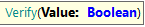

This command is useful to validate if a boolean value is True, setting optionally if test execution must be stopped when validation fails and a message identifying the validation.

Works like an assertion but if the value is not True, then a screenshot of the web page is taken. If it's called with only one parameter, then the StopExecution value will be set to the Verify Stops Execution property's value on the current environment.
This method doesn't return any value
This command can be combined with several commands.
&driver.Verify(&driver.IsElementPresentByID("controlID"))
&driver.Verify(not &driver.AppearText("Not found"), false)
&driver.Verify(not &driver.AppearText("Not found"), false, "Text 'Not found' was found")
&driver.Verify(not &driver.AppearText("Not found"))
&driver.Verify(&driver.GetValueByName("controlName") = "Customer Name", false)
&driver.Verify(&driver.GetValueByName("controlName") = "Customer Name", false, '&driver.GetValueByName("controlName") = "Customer Name"')
This set of commands is available since GeneXus 16 upgrade 10.
Allows setting the default behavior for the Verify commands that only receives one parameter to ease a refactor on all the tests in case it is needed. Take into account that as a good practice this command should never be used explicitly inside a test because it implies that the test will not respect the global testing property designed for setting the Verify behavior, which also can be parameterized by MSBuild.
Parameters:
Example of use:
&driver.SetVerifyStopsExecution(true) &driver.SetVerifyStopsExecution(false)
This command is available since GeneXus 17 Upgrade 5.